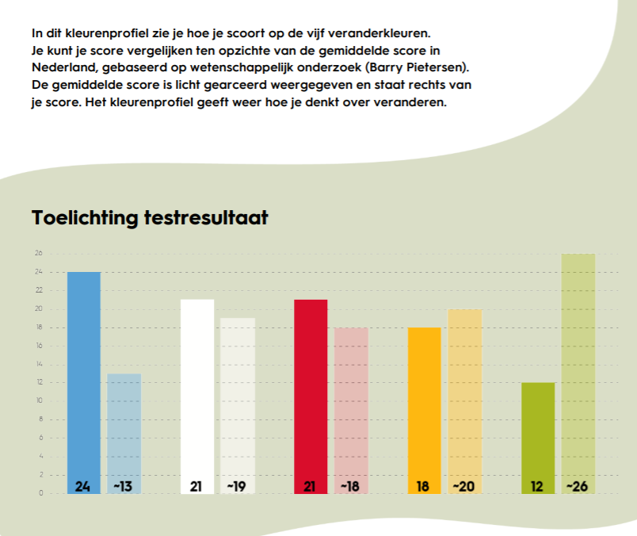

"Als blauwe veranderaar ben je geneigd veranderingen rationeel te bekijken, te ontwerpen en te realiseren.Je gebruikt onderzoek om de beste uitkomst te vinden, je huurt experts in om de beste oplossingen te bedenken en je plant de implementatie zorgvuldig. Projectmatig werken is een belangrijk instrument. De uitkomst van de verandering stemt in principe overeen met het vooraf gestelde doel. Je meet de voortgang onderweg en stuurt bij waar nodig. Om dit te kunnen heb je als blauwe veranderaar verstand van zaken, denk je analytisch en ben je transparant en navolgbaar." (TwynstraGudde; 2020)
Mensen in Finance zijn vaak blauwe veranderaars: rationeel, volgens de regels en zorgvuldig. Ik herken me dan ook erg in deze kleur. Ik word vaak rationeel, direct en zorgvuldig genoemd. Ik vind projectmatig werken ook een fijne manier om te werken.
Daarnaast is wit een kleur die bij mij ook erg hoog scoort.
"Als witte veranderaar ga je er vanuit dat verandering van nature ontstaat en alles autonoomverandert. Als veranderaar versnel of stimuleer je verandering vooral: je geeft datgene waarde tijd rijp voor is een extra duw in de rug of je neemt blokkades weg die verandering in deweg staan. Je gelooft in ondernemerschap en zelforganiserende vermogens van mensen enorganisaties. Betekenisgeving speelt een belangrijke rol in een wit veranderproces. Witteveranderaars proberen te doorzien waar kansen liggen, steunen degenen die ze grijpen enhelpen obstakels voor hen uit de weg te ruimen. Zij zetten zichzelf daarbij ook op het spel." (TwynstraGudde; 2020)
Ik doe nooit iets zonder betekenis en vind het belangrijk om samen te werken naar een doel.
Kleur ATAGIk heb met mijn groepsgenoten ook besproken welke kleur ATAG zou hebben. Wij waren het erover eens dat ATAG waarschijnlijk een blauwe organisatie is. ATAG werkt veel met de scrum project methode. Daarnaast is het een grote organisatie, waar hoogstwaarschijnlijk veel regels en procedures zijn. In de gesprekken met ATAG werd het ons ook duidelijk dat ATAG een erg doelgerichte organisatie is.
